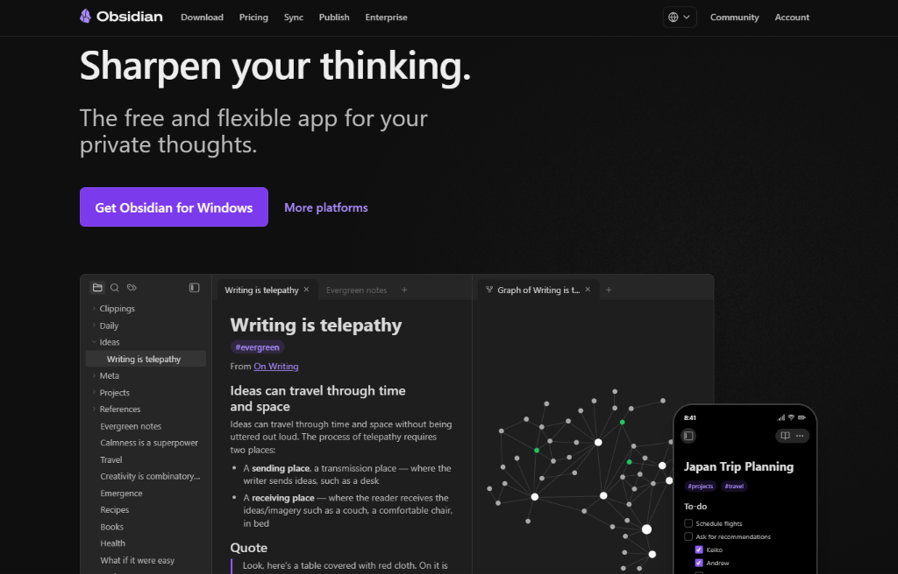
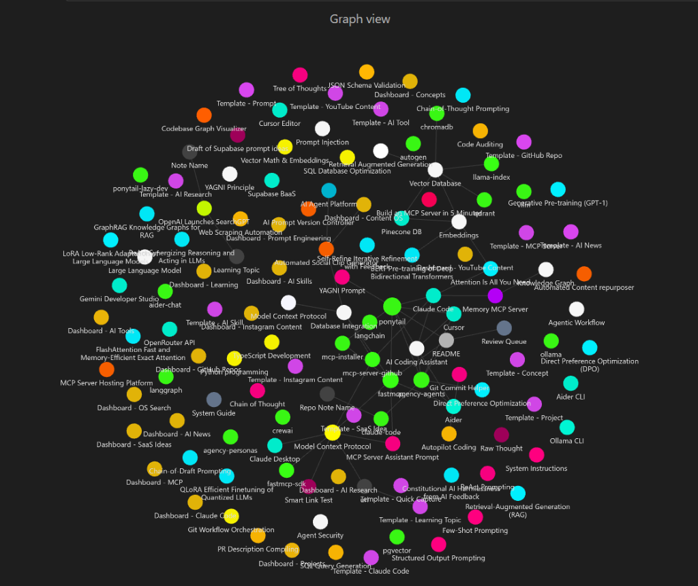

A Step-by-Step Prompting Playbook to Build, Customize, and Automate a Concept-Driven Knowledge Graph from Scratch
To establish your local knowledge graph database, you must install the official Obsidian application client.
Obsidian.Setup.exe) on your computer.SecondBrain, and set its absolute destination folder (e.g. D:\Shobhit\SecondBrain).
The AI Creator OS extends Obsidian's default features with specialized community plugins. Here is the list of plugins to install:
Transforms your vault into an interactive database. It executes complex queries and extracts metadata (likes, shares, categories) to feed search lists and content dashboards. Configuration: Turn **ON** Enable JavaScript Queries and Enable Inline JavaScript Queries in settings.
Lets you evaluate Javascript code and file properties dynamically upon note creation. Used to configure standard properties for repos, SaaS ideas, and social script notes automatically. Configuration: Set the templates folder path to 00 System/Templates and enable the folder creations trigger.
Generates drag-and-drop boards inside Obsidian. Install this to manage your Instagram and YouTube scripting pipelines in the 15 Content OS space visually.
Implements auto-formatting and cell navigation for markdown tables. Useful for compiling technical impact matrices inside research and news notes.
If you prefer not to use an AI agent to set up directories, you can create them instantly in one click by running these terminal commands inside your vault root folder:
# Create folders
New-Item -ItemType Directory -Path "10 Inbox", "00 System/Templates", "00 System/CSS", "00 System/Scripts", "20 Spaces/01 AI Research", "20 Spaces/02 GitHub Repos", "20 Spaces/03 AI Tools", "20 Spaces/04 Prompt Engineering", "20 Spaces/05 Claude Code", "20 Spaces/06 MCP", "20 Spaces/07 AI Skills", "20 Spaces/08 SaaS Ideas", "20 Spaces/09 Instagram Content", "20 Spaces/10 YouTube Content", "20 Spaces/11 Learning", "20 Spaces/12 Projects", "20 Spaces/13 AI News", "20 Spaces/14 OS Search", "20 Spaces/15 Content OS", "20 Spaces/17 Concepts"# Create folders
mkdir -p "10 Inbox" "00 System/Templates" "00 System/CSS" "00 System/Scripts" "20 Spaces/01 AI Research" "20 Spaces/02 GitHub Repos" "20 Spaces/03 AI Tools" "20 Spaces/04 Prompt Engineering" "20 Spaces/05 Claude Code" "20 Spaces/06 MCP" "20 Spaces/07 AI Skills" "20 Spaces/08 SaaS Ideas" "20 Spaces/09 Instagram Content" "20 Spaces/10 YouTube Content" "20 Spaces/11 Learning" "20 Spaces/12 Projects" "20 Spaces/13 AI News" "20 Spaces/14 OS Search" "20 Spaces/15 Content OS" "20 Spaces/17 Concepts"Copy your empty vault directory path, open any agentic IDE (like Claude Code, Antigravity, or Cursor Composer), and execute the prompts below sequentially to build the system automatically:
You are my senior Obsidian architect. Let's build Phase 1 (Foundation & Styling) of my AI Creator Second Brain.
Perform the following tasks:
1. Create Directories:
- Make the folders: `10 Inbox`, `00 System/Templates`, `00 System/CSS`, and `20 Spaces`.
- Inside `20 Spaces`, create: `01 AI Research`, `02 GitHub Repos`, `03 AI Tools`, `04 Prompt Engineering`, `05 Claude Code`, `06 MCP`, `07 AI Skills`, `08 SaaS Ideas`, `09 Instagram Content`, `10 YouTube Content`, `11 Learning`, `12 Projects`, `13 AI News`, `14 OS Search`, `15 Content OS`, and `17 Concepts`.
2. Write the CSS Styling snippet:
- Create the file `00 System/CSS/vault-os.css` containing the high-specificity override for Graph view to color-code default nodes (Purple), resolved nodes (Neon Cyan), and unresolved placeholders (Hot Pink: `#ff007f !important`), along with glassmorphism card layouts.
3. Write file templates inside `00 System/Templates/`:
- `Template - GitHub Repo.md`: Add metadata properties (type, status, repo_url, language, stars, difficulty, tech_stack, category).
- `Template - Concept.md`: Tracks roadmaps, descriptions, and dynamic Dataview trackers.
- `Template - Project.md`: Standard project scope, task checkbox outlines, and dependencies.
- `Template - Instagram Content.md`: Scripting pipelines, captions, hooks, and metrics trackers (likes, views, saves).
Confirm when Phase 1 folders, templates, and styles are successfully created.Let's build Phase 2 (Content OS & Relationship Engine) of the vault.
Perform the following tasks:
1. Write the Backlink relationship engine script:
- Create the file `00 System/Scripts/relationship_engine.js` (or inline javascript template). This script must query the Dataview API to find all files that link to the current file (backlinks) and all concepts listed in frontmatter (outlinks), rendering a clean index at the footer of files.
2. Create the Home Dashboard:
- Create `README.md` at the root of the vault. Use HTML/CSS grids (`os-grid`, `os-card`) to build a dashboard displaying quick access buttons to Spaces, active project pipelines, and content calendars.
3. Set up the Content OS Kanban:
- Create `20 Spaces/15 Content OS/Content OS Dashboard.md`. Set up a Dataview table script querying all notes in Spaces 09 and 10, displaying columns for Title, Status, and Views.
Confirm when the relationship script, README dashboard, and Content OS index are built.Let's build Phase 3 (Automated Concept Engine) of the vault.
Write a Python script at `00 System/Scripts/obsidian_helper.py` that implements a graph-building tool.
Requirements for the python code:
1. Load all Concept notes located inside `20 Spaces/17 Concepts/`. Treat their filenames as matching keywords.
2. Scan all files in the vault. For each file, identify matches of concept keywords.
3. Apply Smart Linking rules:
- Ignore matches located inside code fences (blocks starting with ```).
- Ignore matches in headers (lines starting with #).
- Ignore matches already surrounded by double brackets [[...]].
- Only link the FIRST occurrence of a matching concept in the file body. Wrap it in double brackets.
4. Support CLI command: `python obsidian_helper.py build-graph` to crawl the vault and write changes.
Write this Python file and test that it parses correctly without exceptions.To copy-paste templates manually, use the following definitions:
---
type: concept
category: Core Topic
status: Active
tags:
- concept
- hub
---
# Concept: {{title}}
## Definition
*Provide a concise definition of this concept.*
## Why It Matters
*Explain the core value or purpose of this concept.*
## Learning Roadmap
- [ ] Read basic docs.
- [ ] Build a local project implementation.
- [ ] Connect with advanced tools.
---
## 🔌 OS Relationships
```dataviewjs
dv.view("00 System/Scripts/relationship_engine")
```---
type: project
status: Planning
priority: Medium
due_date: ""
progress: 0
tags:
- project
---
# Project: {{title}}
## Project Scope & Objectives
*Describe the mission of this project and what constitutes success.*
## Roadmap
- [ ] **Phase 1: Research & Discovery**
- [ ] **Phase 2: MVP Development**
- [ ] **Phase 3: Launch**
## Dependencies
- Repo Note
- Tool Note
---
## 🔌 OS Relationships
```dataviewjs
dv.view("00 System/Scripts/relationship_engine")
```Write this script inside 00 System/Scripts/relationship_engine.js to dynamically display related files at the bottom of notes using DataviewJS:
const currentFile = dv.current();
const filePath = currentFile.file.path;
// Find all notes linking here
const backlinks = dv.pages().where(p => {
if (p.file.path === filePath) return false;
const file = app.vault.getAbstractFileByPath(p.file.path);
if (!file) return false;
const cache = app.metadataCache.getFileCache(file);
if (!cache || !cache.links) return false;
return cache.links.some(l => l.link.includes(currentFile.file.name));
});
// Render results
if (backlinks.length > 0) {
dv.header(3, "🔗 Backlinks & Connections");
dv.list(backlinks.map(b => b.file.link));
} else {
dv.paragraph("*No active connections registered.*");
}Save this complete Python codebase inside 00 System/Scripts/obsidian_helper.py to manage graph linking and repository note builds:
#!/usr/bin/env python3
import os
import sys
import re
VAULT_ROOT = os.path.abspath(os.path.join(os.path.dirname(__file__), "..", ".."))
CONCEPTS_DIR = os.path.join(VAULT_ROOT, "20 Spaces", "17 Concepts")
def get_registered_concepts():
concepts = {}
if not os.path.exists(CONCEPTS_DIR):
return concepts
for filename in os.listdir(CONCEPTS_DIR):
if filename.endswith(".md"):
concept_name = filename[:-3]
concepts[concept_name.lower()] = concept_name
return concepts
def smart_link_file(file_path, concepts_dict):
with open(file_path, "r", encoding="utf-8") as f:
content = f.read()
parts = content.split("---", 2)
if len(parts) < 3:
frontmatter, body = "", content
else:
frontmatter = parts[0] + "---" + parts[1] + "---\n"
body = parts[2]
lines = body.split("\n")
in_code_block = False
linked_concepts = set()
new_lines = []
for line in lines:
stripped = line.strip()
if stripped.startswith("```"):
in_code_block = not in_code_block
new_lines.append(line)
continue
if in_code_block or stripped.startswith("#"):
new_lines.append(line)
continue
for c_lower, c_real in concepts_dict.items():
if c_real in linked_concepts: continue
if os.path.basename(file_path)[:-3].lower() == c_lower: continue
pattern = re.compile(r'\b(' + re.escape(c_lower) + r')\b', re.IGNORECASE)
match = pattern.search(line)
if match:
start, end = match.span()
before, after = line[:start], line[end:]
if before.rstrip().endswith("[[") and after.lstrip().startswith("]]"):
linked_concepts.add(c_real)
continue
if "[" in before and "]" in after and "(" in after and ")" in after: continue
if "http" in before: continue
line = line[:start] + f"[[{c_real}]]" + line[end:]
linked_concepts.add(c_real)
new_lines.append(line)
new_content = frontmatter + "\n".join(new_lines)
if new_content != content:
with open(file_path, "w", encoding="utf-8") as f: f.write(new_content)
return True
return False
def build_graph():
print("[*] Launching Smart Linking Relationship Engine...")
concepts = get_registered_concepts()
print(f"[*] Found {len(concepts)} registered Concept Hubs...")
updated_files = 0
for root, dirs, files in os.walk(VAULT_ROOT):
# Skip system or hidden directories
if ".obsidian" in root or "00 System" in root: continue
for file in files:
if file.endswith(".md"):
file_path = os.path.join(root, file)
if smart_link_file(file_path, concepts):
print(f" [+] Smart linked: {os.path.relpath(file_path, VAULT_ROOT)}")
updated_files += 1
print(f"[+] Graph building complete. Updated {updated_files} notes.")
if __name__ == "__main__":
if len(sys.argv) > 1 and sys.argv[1] == "build-graph":
build_graph()
else:
print("Usage: python obsidian_helper.py build-graph")The folders and properties of the Second Brain OS can be modified to suit different niches by editing the directory prompts:
02 GitHub Repos to 02 Client Campaigns.08 SaaS Ideas to 08 Funnel Structures.budget, ROI, conversion_rate, ad_platform.02 GitHub Repos to 02 Story Arcs.03 AI Tools to 03 Character Outlines.08 SaaS Ideas to 08 Chapter Layouts.word_count, POV, timeline, conflict_stage.02 GitHub Repos to 02 Market Sectors.08 SaaS Ideas to 08 Startup Pitches.valuation, ARR, CAGR, funding_stage.Once your note vault is fully populated and styled with the CSS snippets, your Graph View will transform into a beautiful, glowing neon universe. Every space is dynamically color-coded so that connections are immediately clear:
